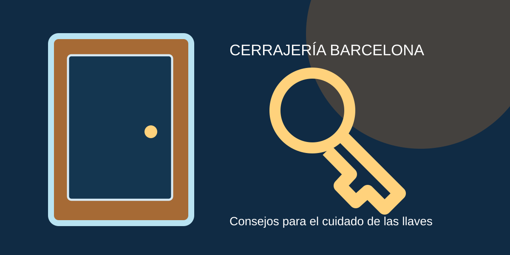

Consejos de cerrajería y seguridad

Evita averías innecesarias
No fuerces llaves que giran con dificultad, comprueba el ajuste de las puertas y evita productos no indicados para cilindros. Tras una pérdida de llaves, valora sustituir el bombín.
Mejora la seguridad
Compara cilindros certificados, escudos protectores y el estado del marco. La protección es un conjunto: una buena cerradura no compensa una puerta mal ajustada.
Qué hacer si pierdes las llaves de casa
Información y recomendaciones para qué hacer si pierdes las llaves de casa.
Cómo elegir un bombín antibumping
Información y recomendaciones para cómo elegir un bombín antibumping.
Cuándo cambiar una cerradura antigua
Información y recomendaciones para cuándo cambiar una cerradura antigua.
Diferencias entre puerta blindada y acorazada
Información y recomendaciones para diferencias entre puerta blindada y acorazada.
Cómo detectar una cerradura desgastada
Información y recomendaciones para cómo detectar una cerradura desgastada.
Consejos para proteger un piso de alquiler
Información y recomendaciones para consejos para proteger un piso de alquiler.
Qué preguntar antes de contratar un cerrajero
Información y recomendaciones para qué preguntar antes de contratar un cerrajero.
Cómo evitar que se parta una llave
Información y recomendaciones para cómo evitar que se parta una llave.
Seguridad en comunidades de vecinos
Información y recomendaciones para seguridad en comunidades de vecinos.
Cómo cuidar una cerradura en invierno
Información y recomendaciones para cómo cuidar una cerradura en invierno.
Qué es el escudo protector de cerradura
Información y recomendaciones para qué es el escudo protector de cerradura.
Cuándo conviene instalar un cerrojo adicional
Información y recomendaciones para cuándo conviene instalar un cerrojo adicional.